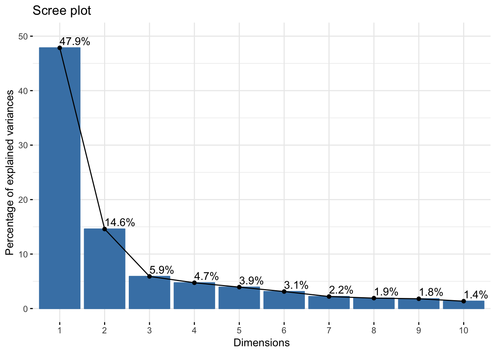
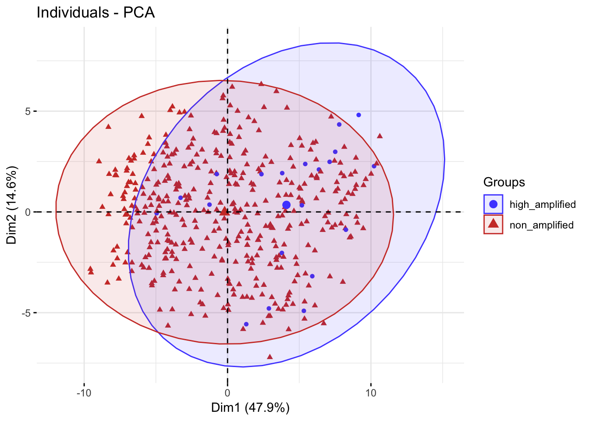
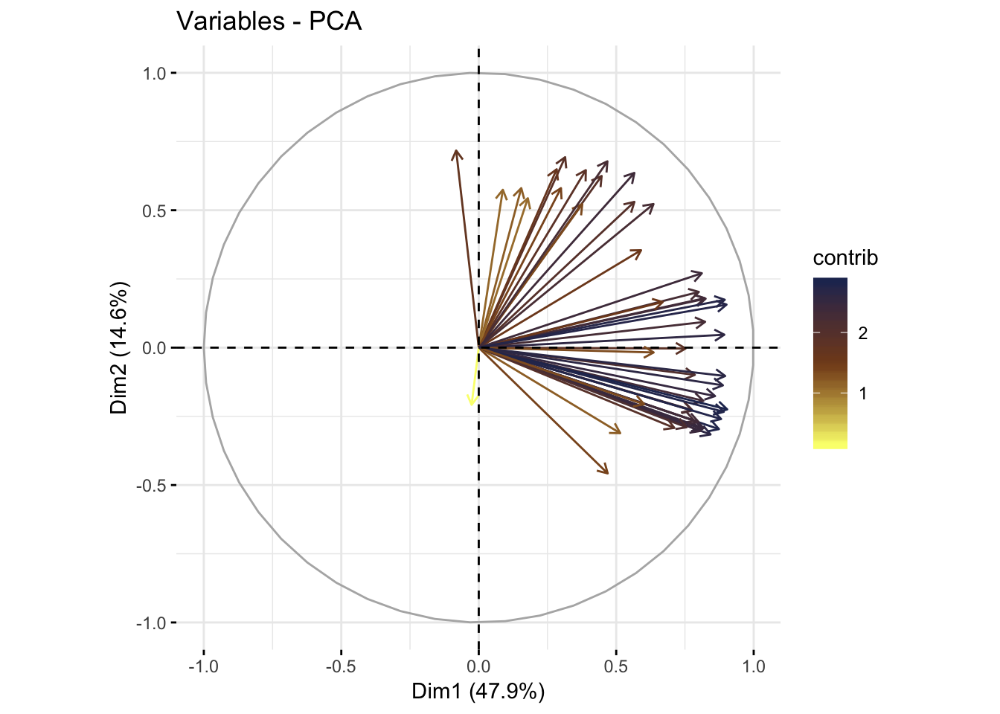

Last updated: 2019-06-19
Checks: 7 0
Knit directory: dlbcl_landscape/
This reproducible R Markdown analysis was created with workflowr (version 1.4.0). The Checks tab describes the reproducibility checks that were applied when the results were created. The Past versions tab lists the development history.
Great! Since the R Markdown file has been committed to the Git repository, you know the exact version of the code that produced these results.
Great job! The global environment was empty. Objects defined in the global environment can affect the analysis in your R Markdown file in unknown ways. For reproduciblity it’s best to always run the code in an empty environment.
The command set.seed(20190613) was run prior to running the code in the R Markdown file. Setting a seed ensures that any results that rely on randomness, e.g. subsampling or permutations, are reproducible.
Great job! Recording the operating system, R version, and package versions is critical for reproducibility.
Nice! There were no cached chunks for this analysis, so you can be confident that you successfully produced the results during this run.
Great job! Using relative paths to the files within your workflowr project makes it easier to run your code on other machines.
Great! You are using Git for version control. Tracking code development and connecting the code version to the results is critical for reproducibility. The version displayed above was the version of the Git repository at the time these results were generated.
Note that you need to be careful to ensure that all relevant files for the analysis have been committed to Git prior to generating the results (you can use wflow_publish or wflow_git_commit). workflowr only checks the R Markdown file, but you know if there are other scripts or data files that it depends on. Below is the status of the Git repository when the results were generated:
Ignored files:
Ignored: .DS_Store
Ignored: .Rhistory
Ignored: .Rproj.user/
Untracked files:
Untracked: analysis/enrichment.Rmd
Untracked: code/gsva1.r
Untracked: code/gsva1.sh
Untracked: code/run_gsva1.pbs
Untracked: data/NIH_PDL1_amp_cases.csv
Untracked: data/NIH_PDL1_nonamp_cases.csv
Untracked: data/aliquot.tsv
Untracked: data/c2_human_immune_genesets.gmt
Untracked: data/dlbcl_total_immune_gset_v1_results.rds
Untracked: data/gdc_clinical_data.json
Untracked: data/gdc_files_and_case_ids.json
Untracked: data/gencode.v22.primary_assembly.annotation.gtf.geneinfo
Untracked: data/gset_ids_complete.rds
Untracked: data/htseq_counts/
Untracked: data/sample.tsv
Untracked: output/dlbcl_expr_matrix.csv
Untracked: output/expr_matrix.csv
Untracked: output/nci_dlbcl_annotation.csv
Untracked: output/nci_dlbcl_unprocessed_counts.csv
Untracked: output/total_immune_gset_v1.rds
Unstaged changes:
Modified: analysis/preprocessing_count_data.Rmd
Note that any generated files, e.g. HTML, png, CSS, etc., are not included in this status report because it is ok for generated content to have uncommitted changes.
These are the previous versions of the R Markdown and HTML files. If you’ve configured a remote Git repository (see ?wflow_git_remote), click on the hyperlinks in the table below to view them.
| File | Version | Author | Date | Message |
|---|---|---|---|---|
| Rmd | 462269b | mleukam | 2019-06-19 | PCA plot of not so successful GSVA |
Clear the workspace
rm(list = ls())Load packages
library("tidyverse")── Attaching packages ──────────────────────────────────────────────────────────────── tidyverse 1.2.1 ──✔ ggplot2 3.1.1 ✔ purrr 0.3.2
✔ tibble 2.1.3 ✔ dplyr 0.8.1
✔ tidyr 0.8.3 ✔ stringr 1.4.0
✔ readr 1.3.1 ✔ forcats 0.4.0── Conflicts ─────────────────────────────────────────────────────────────────── tidyverse_conflicts() ──
✖ dplyr::filter() masks stats::filter()
✖ dplyr::lag() masks stats::lag()library("factoextra")Welcome! Related Books: `Practical Guide To Cluster Analysis in R` at https://goo.gl/13EFCZlibrary("FactoMineR")Load data
# read in data from cluster
nci_dlbcl_es <- readRDS("data/dlbcl_total_immune_gset_v1_results.rds")
# transpose matrix to standard format
nci_es <- t(nci_dlbcl_es)
# read in phenotype data
pheno_data <- read_csv("output/nci_dlbcl_annotation.csv")Parsed with column specification:
cols(
.default = col_character(),
days_to_last_follow_up = col_double(),
updated_datetime = col_datetime(format = ""),
age_at_diagnosis = col_double(),
created_datetime = col_datetime(format = ""),
demographic.updated_datetime = col_datetime(format = ""),
demographic.created_datetime = col_datetime(format = ""),
size = col_double()
)See spec(...) for full column specifications.str(pheno_data)Classes 'spec_tbl_df', 'tbl_df', 'tbl' and 'data.frame': 481 obs. of 67 variables:
$ case_submitter_id : chr "DLBCL11667" "DLBCL10501" "DLBCL10954" "DLBCL10984" ...
$ sample : chr "nci_dlbcl_1" "nci_dlbcl_2" "nci_dlbcl_3" "nci_dlbcl_4" ...
$ case_id : chr "3e164d5d-afa0-4e96-b177-ea9fdf69da7a" "678acbbd-3f1b-4464-ba21-a59606cf19ae" "c1b07bfa-d234-42d6-8a41-97b7a7924f0d" "15b380e1-d220-42b9-8613-18fcefccb0a4" ...
$ pdl1_status : chr "non-amplified" "non-amplified" "non-amplified" "low_amplified" ...
$ filename : chr "b384270b-0315-49c6-bb46-d155d8d41fec.htseq_counts.txt.gz" "ab3f9584-f27f-4d6e-a5de-ac0d0c20de13.htseq_counts.txt.gz" "92fbf689-0c26-4664-9dde-c41534f7b390.htseq_counts.txt.gz" "dc44d3ba-5c4d-40a1-b8a2-f27b88325d0b.htseq_counts.txt.gz" ...
$ sample_id : chr "608e5a37-da88-4c7b-ba56-e096954521c6" "ed5c027b-1d1b-44df-84b0-fdf9e0290dbf" "e5341594-3828-426b-b619-f8187029de31" "d5ef7640-9e05-4b34-875e-7c99f125fe4b" ...
$ sample_submitter_id : chr "DLBCL11667-sample" "DLBCL10501-sample" "DLBCL10954-sample" "DLBCL10984-sample" ...
$ project_id : chr "NCICCR-DLBCL" "NCICCR-DLBCL" "NCICCR-DLBCL" "NCICCR-DLBCL" ...
$ sample_type_id : chr "--" "--" "--" "--" ...
$ time_between_excision_and_freezing: chr "--" "--" "--" "--" ...
$ oct_embedded : chr "--" "--" "--" "--" ...
$ tumor_code_id : chr "--" "--" "--" "--" ...
$ intermediate_dimension : chr "--" "--" "--" "--" ...
$ is_ffpe : chr "--" "--" "--" "--" ...
$ pathology_report_uuid : chr "--" "--" "--" "--" ...
$ tumor_descriptor : chr "--" "--" "--" "--" ...
$ sample_type : chr "Tumor" "Tumor" "Tumor" "Tumor" ...
$ distance_normal_to_tumor : chr "--" "--" "--" "--" ...
$ biospecimen_anatomic_site : chr "--" "--" "--" "--" ...
$ state.x : chr "released" "released" "released" "released" ...
$ diagnosis_pathologically_confirmed: chr "--" "--" "--" "--" ...
$ current_weight : chr "--" "--" "--" "--" ...
$ composition : chr "--" "--" "--" "--" ...
$ time_between_clamping_and_freezing: chr "--" "--" "--" "--" ...
$ distributor_reference : chr "--" "--" "--" "--" ...
$ shortest_dimension : chr "--" "--" "--" "--" ...
$ method_of_sample_procurement : chr "--" "--" "--" "--" ...
$ tumor_code : chr "--" "--" "--" "--" ...
$ passage_count : chr "--" "--" "--" "--" ...
$ tissue_type : chr "Not Reported" "Not Reported" "Not Reported" "Not Reported" ...
$ biospecimen_laterality : chr "--" "--" "--" "--" ...
$ days_to_sample_procurement : chr "--" "--" "--" "--" ...
$ freezing_method : chr "--" "--" "--" "--" ...
$ preservation_method : chr "--" "--" "--" "--" ...
$ growth_rate : chr "--" "--" "--" "--" ...
$ days_to_collection : chr "--" "--" "--" "--" ...
$ catalog_reference : chr "--" "--" "--" "--" ...
$ initial_weight : chr "--" "--" "--" "--" ...
$ longest_dimension : chr "--" "--" "--" "--" ...
$ submitter_id : chr "DLBCL11667-diagnosis" "DLBCL10501-diagnosis" "DLBCL10954-diagnosis" "DLBCL10984-diagnosis" ...
$ morphology : chr "Not Reported" "Not Reported" "Not Reported" "Not Reported" ...
$ days_to_last_follow_up : num 633 674 425 NA 2299 ...
$ updated_datetime : POSIXct, format: "2018-08-31 20:09:50" "2018-08-31 20:09:50" ...
$ tumor_stage : chr "IPI:1" "IPI:1" "IPI:13" "IPI:12" ...
$ age_at_diagnosis : num 17520 15330 17155 27375 27740 ...
$ created_datetime : POSIXct, format: "2018-02-23 21:38:26" "2018-02-23 21:38:26" ...
$ diagnosis_id : chr "a070b960-d0db-4763-98e8-b2af15c67af4" "6c84264c-6d68-4a9c-aae6-74fab32d4049" "23d9401d-80d5-41b4-b04c-b628432ae512" "b94c4b2f-f551-41d8-b0df-cb99bf4a0a42" ...
$ tissue_or_organ_of_origin : chr "Lymph node, NOS" "Lymph node, NOS" "Lymph node, NOS" "Lymph node, NOS" ...
$ ann_arbor_clinical_stage : chr "Stage III" "Stage II" "Stage I" "Stage I" ...
$ progression_or_recurrence : chr "not reported" "not reported" "not reported" "not reported" ...
$ last_known_disease_status : chr "not reported" "not reported" "not reported" "not reported" ...
$ primary_diagnosis : chr "Diffuse large B-cell lymphoma, NOS" "Diffuse large B-cell lymphoma, NOS" "Diffuse large B-cell lymphoma, NOS" "Diffuse large B-cell lymphoma, NOS" ...
$ tumor_grade : chr "not reported" "not reported" "not reported" "not reported" ...
$ site_of_resection_or_biopsy : chr "Lymph node, NOS" "Lymph node, NOS" "Lymph node, NOS" "Lymph node, NOS" ...
$ demographic.updated_datetime : POSIXct, format: "2019-04-29 15:48:27" "2019-04-29 15:48:27" ...
$ demographic.created_datetime : POSIXct, format: "2018-02-23 19:16:31" "2018-02-23 19:16:31" ...
$ demographic.gender : chr "female" "male" "male" "female" ...
$ demographic.state : chr "released" "released" "released" "released" ...
$ demographic.submitter_id : chr "DLBCL11667-demographic" "DLBCL10501-demographic" "DLBCL10954-demographic" "DLBCL10984-demographic" ...
$ demographic.race : chr "not reported" "not reported" "not reported" "not reported" ...
$ demographic.ethnicity : chr "not reported" "not reported" "not reported" "not reported" ...
$ demographic.vital_status : chr "Dead" "Alive" "Dead" "Alive" ...
$ demographic.demographic_id : chr "049c7480-2932-491d-b708-b6722e9bdd19" "ea0674a8-3363-460a-b331-b60f3ad62ca4" "c8caf6bf-2cea-41f4-986a-4206c8173739" "705db031-d2f8-42ac-84c3-82e90cc9d5cb" ...
$ id : chr "eeee5aab-8b4e-48bc-9d66-d1682920eb5f" "6a9fd6fe-326a-4578-9e61-a123cc8d9c53" "d15d4347-4a8a-48ce-bec1-c188072e2e05" "cb18f318-0bfa-409a-b855-424e66f9747e" ...
$ md5 : chr "1198da0bc19b2ae801b6150acfbb0c59" "7ce9b779255ee36716f3927c26137f9c" "593b75db5953d519492f1a74770622a3" "b26c7aa239a3aa6fd561e5deef94ef45" ...
$ size : num 235439 232896 248096 245979 246899 ...
$ state.y : chr "released" "released" "released" "released" ...
- attr(*, "spec")=
.. cols(
.. case_submitter_id = col_character(),
.. sample = col_character(),
.. case_id = col_character(),
.. pdl1_status = col_character(),
.. filename = col_character(),
.. sample_id = col_character(),
.. sample_submitter_id = col_character(),
.. project_id = col_character(),
.. sample_type_id = col_character(),
.. time_between_excision_and_freezing = col_character(),
.. oct_embedded = col_character(),
.. tumor_code_id = col_character(),
.. intermediate_dimension = col_character(),
.. is_ffpe = col_character(),
.. pathology_report_uuid = col_character(),
.. tumor_descriptor = col_character(),
.. sample_type = col_character(),
.. distance_normal_to_tumor = col_character(),
.. biospecimen_anatomic_site = col_character(),
.. state.x = col_character(),
.. diagnosis_pathologically_confirmed = col_character(),
.. current_weight = col_character(),
.. composition = col_character(),
.. time_between_clamping_and_freezing = col_character(),
.. distributor_reference = col_character(),
.. shortest_dimension = col_character(),
.. method_of_sample_procurement = col_character(),
.. tumor_code = col_character(),
.. passage_count = col_character(),
.. tissue_type = col_character(),
.. biospecimen_laterality = col_character(),
.. days_to_sample_procurement = col_character(),
.. freezing_method = col_character(),
.. preservation_method = col_character(),
.. growth_rate = col_character(),
.. days_to_collection = col_character(),
.. catalog_reference = col_character(),
.. initial_weight = col_character(),
.. longest_dimension = col_character(),
.. submitter_id = col_character(),
.. morphology = col_character(),
.. days_to_last_follow_up = col_double(),
.. updated_datetime = col_datetime(format = ""),
.. tumor_stage = col_character(),
.. age_at_diagnosis = col_double(),
.. created_datetime = col_datetime(format = ""),
.. diagnosis_id = col_character(),
.. tissue_or_organ_of_origin = col_character(),
.. ann_arbor_clinical_stage = col_character(),
.. progression_or_recurrence = col_character(),
.. last_known_disease_status = col_character(),
.. primary_diagnosis = col_character(),
.. tumor_grade = col_character(),
.. site_of_resection_or_biopsy = col_character(),
.. demographic.updated_datetime = col_datetime(format = ""),
.. demographic.created_datetime = col_datetime(format = ""),
.. demographic.gender = col_character(),
.. demographic.state = col_character(),
.. demographic.submitter_id = col_character(),
.. demographic.race = col_character(),
.. demographic.ethnicity = col_character(),
.. demographic.vital_status = col_character(),
.. demographic.demographic_id = col_character(),
.. id = col_character(),
.. md5 = col_character(),
.. size = col_double(),
.. state.y = col_character()
.. )summary(as.factor(pheno_data$pdl1_status))high_amplified low_amplified non-amplified NA's
20 45 406 10 pheno_data <- pheno_data %>%
mutate(pdl1_status = replace_na(pdl1_status, "not_assessed")) %>%
mutate(pdl1_status = ifelse(pdl1_status == "non-amplified", "non_amplified", pdl1_status))
summary(as.factor(pheno_data$pdl1_status))high_amplified low_amplified non_amplified not_assessed
20 45 406 10 group_table <- pheno_data %>%
dplyr::select(samples = case_submitter_id, pdl1_status)
nci_es_groups <- as.data.frame(nci_es) %>%
rownames_to_column(var = "samples") %>%
as_tibble() %>%
left_join(group_table) %>%
dplyr::select(samples, pdl1_status, everything()) %>%
as.data.frame() %>%
column_to_rownames(var = "samples") %>%
mutate(pdl1_status = as.factor(pdl1_status))Joining, by = "samples"# remove low amplified and samples not assessed
nrow(nci_es_groups)[1] 481nci_es_filtered <- nci_es_groups %>%
dplyr::filter(pdl1_status %in% c("high_amplified", "non_amplified"))
nrow(nci_es_filtered)[1] 426# get PCA values
dlbcl_pca <- PCA(nci_es_filtered[-1], scale.unit = TRUE, graph = FALSE)
# get eigenvalues
eig_val <- get_eigenvalue(dlbcl_pca)
eig_val eigenvalue variance.percent cumulative.variance.percent
Dim.1 23.450812812 47.858801657 47.85880
Dim.2 7.154626387 14.601278341 62.46008
Dim.3 2.890630484 5.899245886 68.35933
Dim.4 2.320665682 4.736052413 73.09538
Dim.5 1.927115042 3.932887840 77.02827
Dim.6 1.530613611 3.123701247 80.15197
Dim.7 1.082408338 2.208996608 82.36096
Dim.8 0.937145933 1.912542721 84.27351
Dim.9 0.879032058 1.793942975 86.06745
Dim.10 0.664196534 1.355503131 87.42295
Dim.11 0.578922228 1.181473934 88.60443
Dim.12 0.504019316 1.028610849 89.63304
Dim.13 0.463829928 0.946591689 90.57963
Dim.14 0.402121743 0.820656618 91.40029
Dim.15 0.382080734 0.779756600 92.18004
Dim.16 0.332367714 0.678301458 92.85834
Dim.17 0.320448716 0.653976971 93.51232
Dim.18 0.304785018 0.622010242 94.13433
Dim.19 0.271766443 0.554625394 94.68896
Dim.20 0.240391660 0.490595224 95.17955
Dim.21 0.210603597 0.429803260 95.60936
Dim.22 0.202479914 0.413224314 96.02258
Dim.23 0.175907186 0.358994258 96.38157
Dim.24 0.153540521 0.313348003 96.69492
Dim.25 0.150154867 0.306438504 97.00136
Dim.26 0.131852824 0.269087396 97.27045
Dim.27 0.129270246 0.263816829 97.53426
Dim.28 0.114596640 0.233870693 97.76814
Dim.29 0.107372846 0.219128257 97.98726
Dim.30 0.097557421 0.199096777 98.18636
Dim.31 0.094920464 0.193715232 98.38008
Dim.32 0.077701997 0.158575505 98.53865
Dim.33 0.072972662 0.148923800 98.68757
Dim.34 0.068550016 0.139897991 98.82747
Dim.35 0.063809819 0.130224120 98.95770
Dim.36 0.061650039 0.125816405 99.08351
Dim.37 0.056493296 0.115292441 99.19881
Dim.38 0.051542301 0.105188369 99.30399
Dim.39 0.046845045 0.095602132 99.39960
Dim.40 0.044057054 0.089912355 99.48951
Dim.41 0.042468286 0.086669971 99.57618
Dim.42 0.037540166 0.076612585 99.65279
Dim.43 0.035828871 0.073120144 99.72591
Dim.44 0.034011197 0.069410606 99.79532
Dim.45 0.029872745 0.060964786 99.85629
Dim.46 0.027187626 0.055484951 99.91177
Dim.47 0.022335398 0.045582445 99.95735
Dim.48 0.016356208 0.033380016 99.99073
Dim.49 0.004540368 0.009266057 100.00000fviz_eig(dlbcl_pca, addlabels = TRUE, ylim = c(0, 50))
ind <- get_pca_ind(dlbcl_pca)
pdl1_status <- nci_es_filtered$pdl1_status
# visualize PCA
fviz_pca_ind(dlbcl_pca,
label = "none",
habillage = nci_es_filtered$pdl1_status,
palette = "igv",
addEllipses = TRUE)
fviz_pca_var(dlbcl_pca, col.var="contrib",
gradient.cols = "rickandmorty",
label = "none")
sessionInfo()R version 3.5.3 (2019-03-11)
Platform: x86_64-apple-darwin15.6.0 (64-bit)
Running under: macOS Mojave 10.14.4
Matrix products: default
BLAS: /Library/Frameworks/R.framework/Versions/3.5/Resources/lib/libRblas.0.dylib
LAPACK: /Library/Frameworks/R.framework/Versions/3.5/Resources/lib/libRlapack.dylib
locale:
[1] en_US.UTF-8/en_US.UTF-8/en_US.UTF-8/C/en_US.UTF-8/en_US.UTF-8
attached base packages:
[1] stats graphics grDevices utils datasets methods base
other attached packages:
[1] FactoMineR_1.41 factoextra_1.0.5 forcats_0.4.0 stringr_1.4.0
[5] dplyr_0.8.1 purrr_0.3.2 readr_1.3.1 tidyr_0.8.3
[9] tibble_2.1.3 ggplot2_3.1.1 tidyverse_1.2.1
loaded via a namespace (and not attached):
[1] tidyselect_0.2.5 xfun_0.7 haven_2.1.0
[4] lattice_0.20-38 colorspace_1.4-1 generics_0.0.2
[7] htmltools_0.3.6 yaml_2.2.0 rlang_0.3.4
[10] ggpubr_0.2 pillar_1.4.1 glue_1.3.1
[13] withr_2.1.2 modelr_0.1.4 readxl_1.3.1
[16] plyr_1.8.4 munsell_0.5.0 gtable_0.3.0
[19] workflowr_1.4.0 cellranger_1.1.0 ggsci_2.9
[22] rvest_0.3.4 leaps_3.0 evaluate_0.14
[25] labeling_0.3 knitr_1.23 broom_0.5.2
[28] Rcpp_1.0.1 flashClust_1.01-2 scales_1.0.0
[31] backports_1.1.4 scatterplot3d_0.3-41 jsonlite_1.6
[34] fs_1.3.1 hms_0.4.2 digest_0.6.19
[37] stringi_1.4.3 ggrepel_0.8.1 grid_3.5.3
[40] rprojroot_1.3-2 cli_1.1.0 tools_3.5.3
[43] magrittr_1.5 lazyeval_0.2.2 cluster_2.0.9
[46] crayon_1.3.4 whisker_0.3-2 pkgconfig_2.0.2
[49] MASS_7.3-51.4 xml2_1.2.0 lubridate_1.7.4
[52] assertthat_0.2.1 rmarkdown_1.13 httr_1.4.0
[55] rstudioapi_0.10 R6_2.4.0 nlme_3.1-140
[58] git2r_0.25.2 compiler_3.5.3